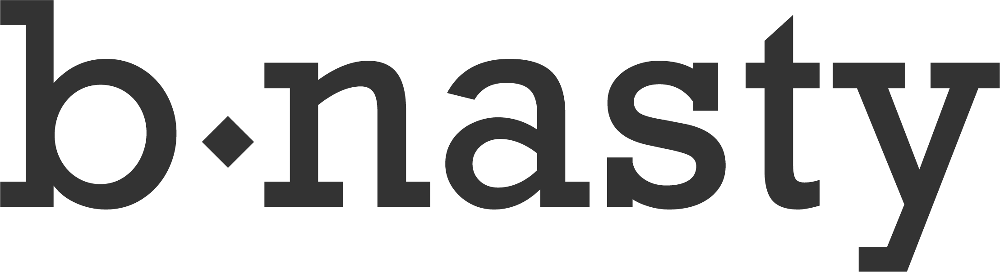
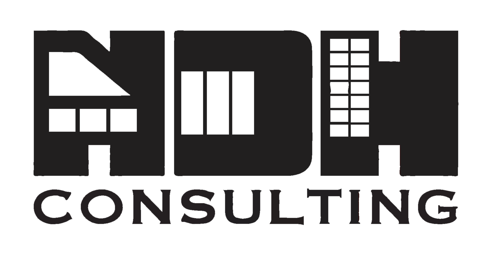
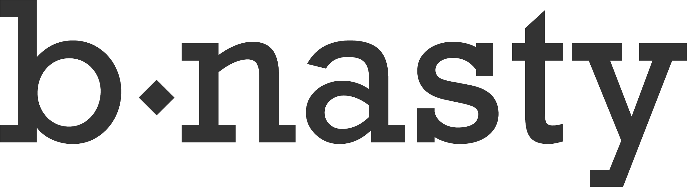
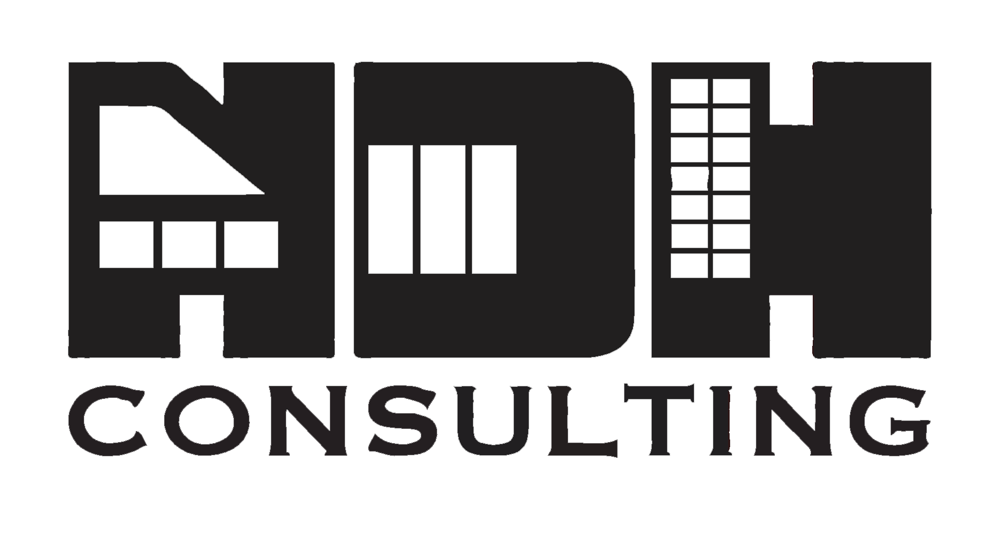
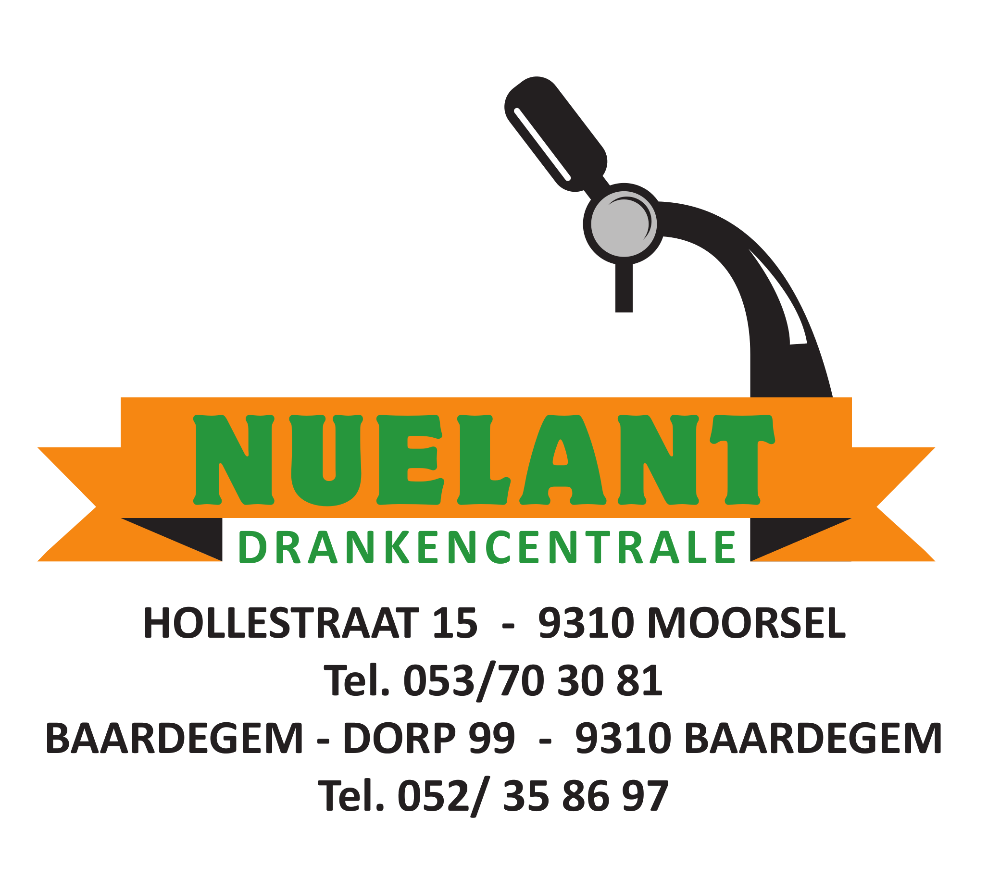
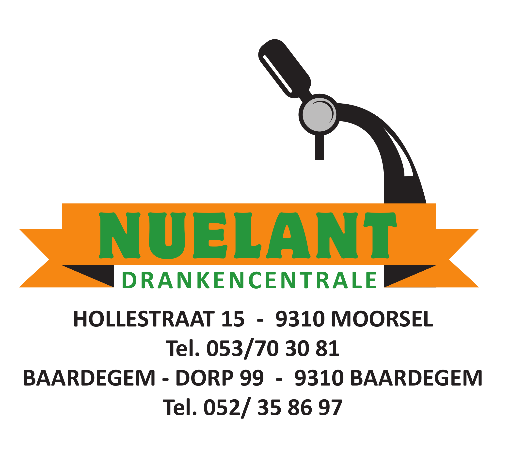
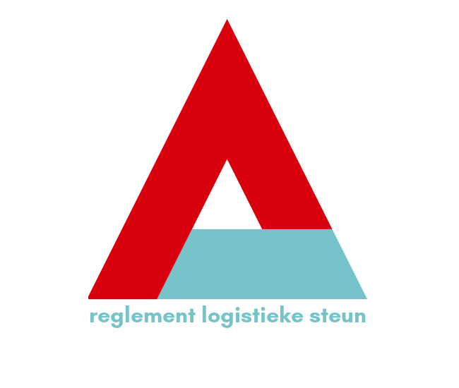
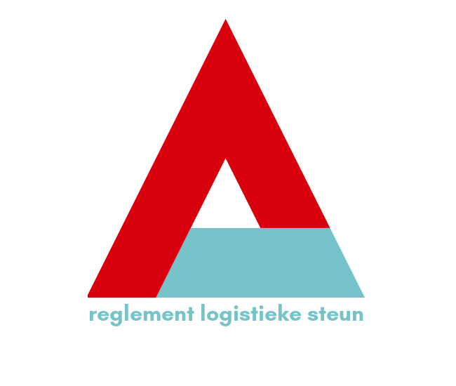

Camping
Voor festivalgangers die van ver komen of voor feestvierders die niet te ver naar hun bedje willen lopen, is er plaats om te kamperen.


Dit is volledig gratis. Het enige dat je zelf moet meebrengen, is je tent en slaapgerief!


Bubbelpop is een gezellig festival dat in 2020 te Welle ontstaan is toen door de coronapandemie de gebruikelijke festivalzomer in het water viel. Na een eerste editie in onze eigen bubbel, kriebelde het al snel om dit concept te herhalen en met meer mensen te delen. Gedurende de volgende jaren groeide ons mini-festival dan ook verder. Sinds 2023 zijn we gehuisvest te Herdersem en organiseren we Bubbelpop op Festivalweide Lambrecht. We staan bekend om onze unieke/prettig gestoorde Bubbelboits en een feeërieke sfeer. We geven daarnaast een platform aan lokaal talent en zorgen voor onvergetelijke feestjes.
Nieuwsgierig? Foto's van de vorige editie kan je in dit album terugvinden.
Voor meer info over de komende editie, kan je ons volgen op Instagram, Facebook of via het Facebook evenement!
 
 

 
